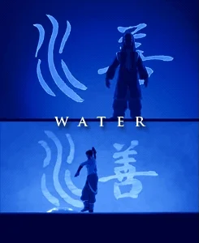
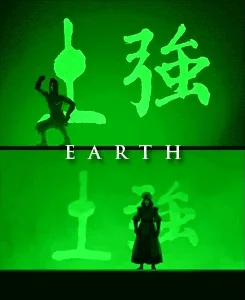
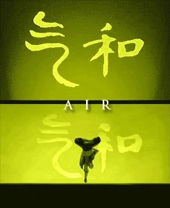

-
Água
Descrição
Dobra de Água é praticado por algumas pessoas da Tribo da Água. Ao contrário dos outros elementos, a água é o único que não possui um animal como dobrador original, mas sim a Lua. Semelhante ao seu elemento, Dobradores de Água são altamente adaptáveis e versáteis. Os movimentos de tal arte envolvem basicamente usar a energia de seu adversário contra ele mesmo, em contraste com as dobras de fogo e terra: a intenção do dobrador de água é controlar os oponentes para não machucá-los. Este é o preceito básico da Dobra de Água, e seu movimento básico consiste em puxar e empurrar a água, como ocorre com as marés. Os movimentos da Dobra de água, assim, são mais defensivos do que ofensivos, entretanto, eles podem ser bem poderosos e causar um grande estrago, quando realizados por um verdadeiro mestre.
-
Terra
Descrição
Dobra de Terra é praticado por algumas pessoas do Reino da Terra. Os dobradores originais de Terra são as Toupeiras-Texugo, e assim como os Dobradores de Água, eles podem ter vantagens ou desvantagens de acordo com a quantidade de Terra em torno deles, embora as condições não sejam tão extremas. Os movimentos dessa dobra são retirados do estilo Hung Gar, do Kung Fu. Em seu nível mais avançado, o dobrador de terra pode sentir seu adversário apenas pelo contato de ambos com a terra, não necessitando da visão para atacá-lo. Tal nível se baseia no Louva-a-Deus do Sul, também do Kung Fu.
-
Fogo

Descrição
Dobra de Fogo é praticada por algumas pessoas na Nação do Fogo. Os Dragões são os dobradores originais deste elemento, e posteriormente ensinaram aos Guerreiros do Sol. O fogo é a dobra mais agressiva entre todas as quatro. Ao contrário de outros dobradores que dependem de fontes externar para dobrar, os dobradores de fogo podem produzir o seu próprio fogo usando sua fonte interna de calor, além de também poderem controlar o fogo já existente. Em batalha, um dobrador de fogo compensa sua falta de movimentos defensivos lançando várias labaredas em uma grande variedade de formas: fortes rajadas de fogo, esferas de fogo, paredes de fogo, etc.. Além de muito poderosa, a Dobra pode se realizar praticamente em qualquer lugar, desde que haja oxigênio para o fogo queimar.
-
Ar
Descrição
Dobra de Ar é praticada por algumas pessoas dos Nômades do Ar. Os Bisões-Voadores foram os dobradores originais deste elemento. O Ar é o elemento da harmonia e da liberdade. Os Dobradores de Ar, como o ar que dobram, são calmos e pacíficos, e tentam se livrar das apegações mundanas para se tornarem livres espiritualmente. Os Dobradores de Ar não tem uma grande fonte de poder como os Dobradores de Fogo e os Dobradores de Água, tendo como excecões aqueles que dominaram a dobra e podem retirar o ar de seus adversários, também com praticamente não há limitações para um dobrador de ar, já que o ar está em todo lugar.